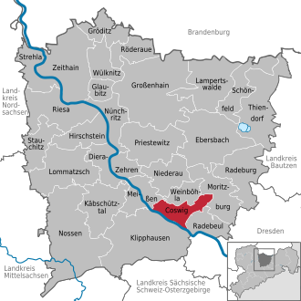
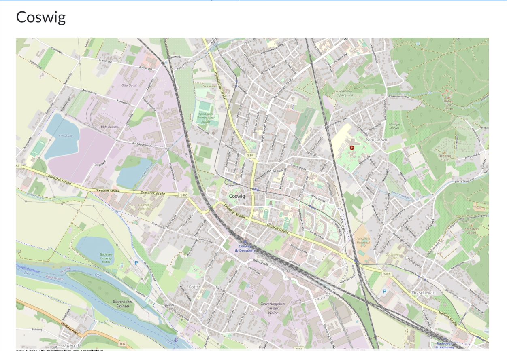

Stadtteil- und Sozialraumanalyse Coswig
– Fokus auf ältere Menschen
Eine methodische Analyse der sozialen Strukturen, Herausforderungen und Entwicklungspotenziale für die ältere Bevölkerung in Coswig
Gliederung der Präsentation
Einführung & Grundlagen
Titel, Gliederung, geografische Lage und demografische Grunddaten von Coswig
Medizinische & Soziale Infrastruktur
Gesundheitsversorgung, Pflege, Mobilität, Nahversorgung und soziale Angebote
Alltag & Lebensqualität
Tagesstrukturen älterer Menschen, praktische Angebote und Freizeitaktivitäten
Analyse & Bewertung
Stärken, Schwächen, Herausforderungen und Verbesserungsbedarf
Fazit & Ausblick
Zusammenfassung, Bewertung und Handlungsempfehlungen für die Zukunft
Anhang & Quellen
Bildergalerie, Literaturverzeichnis und verwendete Quellen
Coswig – Lage & Überblick
Coswig liegt im Herzen Sachsens zwischen Dresden und Meißen. Die Karte zeigt die zentrale Lage, die gute Anbindung und die wichtigsten Stadtteile auf einen Blick.
Coswig im Überblick
Coswig ist eine Stadt im Elbtal zwischen Dresden und Meißen mit rund 20.400 Einwohnern. Die Bevölkerung ist überdurchschnittlich alt, die Eigentümerquote hoch. Die Stadt bietet eine hohe Lebensqualität und stabile Wohnverhältnisse.
Stadtprofil
25,9 km², Elbtal, Landkreis Meißen
Einwohner
ca. 20.400 (2023)
Altersstruktur
Ø 49 Jahre, 1/3 über 65
Eigentümerquote
über 61 %
Soziale Infrastruktur – Beispiel
Medizin & Pflege
Coswig verfügt über ein modernes Fachkrankenhaus, ein Herzzentrum und zahlreiche Fachärzte. Für ältere Menschen gibt es mehrere Pflegeheime, betreutes Wohnen und ein breites Angebot an ambulanten Diensten.
Krankenhäuser
Fachkrankenhaus, Herzzentrum, MVZ
Pflege & Betreuung
Pflegeheime, betreutes Wohnen, ambulante Dienste
Mobilität & Nahversorgung
Die Stadt ist durch Bahn, Bus und Fähre gut angebunden. Supermärkte, Drogerien und soziale Einrichtungen sichern die Nahversorgung. Barrierefreiheit ist an vielen Stellen gegeben.
ÖPNV & Mobilität
Bahn, Bus, Fähre, barrierefrei
Nahversorgung
Supermärkte, Drogerien, Tafel
Soziale Angebote & Freizeit
Das gesellschaftliche Leben in Coswig ist vielfältig: Seniorentreffs, Ehrenamt und Kulturangebote fördern Begegnung und Teilhabe. Besonders aktiv sind die Nachbarschaftshilfe und das Quartiersmanagement.
Ehrenamt & Treffpunkte
Seniorentreffs, Nachbarschaftshilfe, Quartiersmanagement
Kultur & Freizeit
Kultursommer, Konzerte, VHS
Alltag älterer Menschen
Der Alltag vieler Senior:innen ist geprägt von festen Strukturen, gemeinsamen Aktivitäten und regelmäßigen Begegnungen. Angebote wie Gymnastik, Ausflüge und Kaffeerunden fördern die Lebensqualität.
Struktur & Teilhabe
Feste Tagesstruktur, Begegnung, Aktivitäten


Stärken
Coswig überzeugt durch ein breites Angebot, barrierefreie Strukturen, eine starke Gemeinschaft und hohe Wohnqualität. Die Stadt bietet viele Möglichkeiten zur Teilhabe und Unterstützung.
Vielfalt
Pflege, Freizeit, Kultur
Barrierefreiheit
Wohnungen, ÖPNV
Ehrenamt
Starke Gemeinschaft
Wohnqualität
Eigentum, Stabilität
Lücken & Herausforderungen
Trotz vieler Stärken gibt es Herausforderungen: Die Versorgung in Randbereichen, Mobilität, zielgruppenspezifische Angebote und die Koordination müssen weiter verbessert werden. Besonders für "junge Alte" fehlen passende Angebote.
Zentrale Angebote
Randbereiche unterversorgt
Mobilität
Fahrdienste fehlen
Zielgruppen
Wenig für "junge Alte"
Koordination
Infos verstreut
Zusammenfassung & Fazit
Stärken
- Seniorengerechte Wohnsituation
- Gute ärztliche und pflegerische Versorgung
- Reiches Freizeit- und Ehrenamtsangebot
- Aktive Netzwerke von Ehrenamtlichen
- Zahlreiche kulturelle Veranstaltungen
- Soziale Teilhabe und Gemeinschaft werden gefördert
Verbesserungsbedarf
- Dezentrale Versorgung und Mobilität für weniger mobile Senior:innen verbessern
- Koordination der Hilfsangebote stärken
- Angebote für spezifische Bedürfnisse (z. B. Demenz, Trauerbewältigung) ausbauen
- Finanzielle Zugänglichkeit sichern und transparenter gestalten (Altersarmut betrifft ca. 1.050 Senior:innen)
Ausblick
Coswig hat viel erreicht, doch um den Anforderungen einer alternden Gesellschaft langfristig gerecht zu werden, sind gezielte Verbesserungen und eine stärkere Vernetzung der Angebote erforderlich.
Coswig im Bild: Ortsteile und Strukturen
Zentrale Bereiche


Angebote

Quellen & Literatur zur Stadtteilanalyse
Literatur & Studien
- Bundesinstitut für Bau-, Stadt- und Raumforschung (BBSR): "Sozialraumanalyse in der Stadtentwicklung", Bonn 2022
- Statistisches Landesamt Sachsen: "Demografische Entwicklung in Sachsen", Dresden 2023
- Stadt Coswig: "Seniorenleitplan Coswig 2022"
- Deutscher Verein für öffentliche und private Fürsorge: "Handbuch Sozialraumorientierung", Berlin 2021
- Häußermann, H./Siebel, W.: "Stadtsoziologie – Eine Einführung", Frankfurt/Main 2020
Online-Quellen
- Stadt Coswig: www.coswig.de
- Statistisches Landesamt Sachsen: statistik.sachsen.de
- Bundesinstitut für Bau-, Stadt- und Raumforschung: bbsr.bund.de
- Mehrgenerationenhaus Coswig: mehrgenerationenhaus-coswig.de
- Quartiersmanagement Coswig: quartier-coswig.de
Bildquellen
- Stadt Coswig (Pressefotos, Stadtarchiv): www.coswig.de
- Wikimedia Commons: commons.wikimedia.org
- OpenStreetMap-Mitwirkende: openstreetmap.org/copyright
- Unsplash (freie Fotos): unsplash.com/s/photos/coswig
- Eigene Aufnahmen und Präsentationsmaterial
- Icons: Font Awesome (https://fontawesome.com)
Zusammenfassung der Sozialraumanalyse Coswig
1. Einführung: Stadt Coswig im Überblick
Coswig ist eine mittelgroße Stadt im Landkreis Meißen, Sachsen, im mittleren Elbtal zwischen Dresden und Meißen. Mit ca. 20.400 Einwohnern (2022/2023) und einer Fläche von 25,9 km² ist die Stadt durch einen hohen Altersdurchschnitt (Ø 49 Jahre, 1/3 über 65) und eine hohe Eigentümerquote (über 61 %) geprägt. Die Wohnverhältnisse sind stabil und meist finanziell gesichert.
2. Medizinische und pflegerische Versorgung
Coswig bietet eine sehr gute medizinische Infrastruktur: Fachkrankenhaus (Lungen- und Bronchialerkrankungen), Herzzentrum, medizinisches Versorgungszentrum, zahlreiche Fach- und Hausärzte, Apotheken und ambulante Dienste. Pflegeheime und betreutes Wohnen sind vielfältig vorhanden und barrierearm gestaltet.
3. Mobilität und Nahversorgung
Die Stadt ist durch Bahn, S-Bahn, Straßenbahn, Busse und Fähren gut angebunden. Es gibt barrierefreie Zugänge, Seniorentaxis und eine breite Nahversorgung (Supermärkte, Drogerien, soziale Einrichtungen wie Tafel und Sozialkaufhaus).
4. Wohnen und Pflege
Das Angebot reicht von Pflegeheimen über betreutes Wohnen bis zu barrierearmen Wohnungen. Ambulante Pflegedienste und Alltagsbegleitung sind etabliert.
5. Soziale Angebote, Ehrenamt und Freizeit
Seniorentreffs, Mehrgenerationenhaus, Nachbarschaftshilfe, Quartiersmanagement, Kulturveranstaltungen (Kultursommer, Konzerte, VHS) und eine aktive Ehrenamtskultur prägen das gesellschaftliche Leben.
6. Alltagsstruktur älterer Menschen
Der Alltag ist geprägt von festen Strukturen, gemeinsamen Aktivitäten, Begegnungen, Ausflügen und kulturellen Veranstaltungen.
7. Stärken der Senioreninfrastruktur
Breites Angebot von Pflege bis Freizeit, barrierearme Wohnungen, gute ÖPNV-Anbindung, aktive Ehrenamtskultur, Quartiersmanagement, hohe Eigentümerquote und gute Wohnqualität.
8. Lücken und Herausforderungen
Viele Angebote konzentrieren sich auf das Zentrum, Randbereiche sind teils unterversorgt. Es fehlt an zentraler Koordination, Fahrdiensten, zielgruppenspezifischen Angeboten ("junge Alte"), spezialisierten Gruppen (Demenz, Sucht, Trauer) und finanziell zugänglichen Angeboten. Nicht seniorengerechte Bereiche bestehen v.a. in Gewerbegebieten und Neucoswig.
9. Fazit
Coswig bietet eine solide Infrastruktur und vielfältige Teilhabemöglichkeiten für ältere Menschen. Defizite bestehen in der dezentralen Versorgung, Mobilität und Koordination. Altersarmut ist ein wachsendes Thema. Die Stadt hat viel erreicht, muss aber gezielt nachsteuern, um den Anforderungen des demografischen Wandels gerecht zu werden.